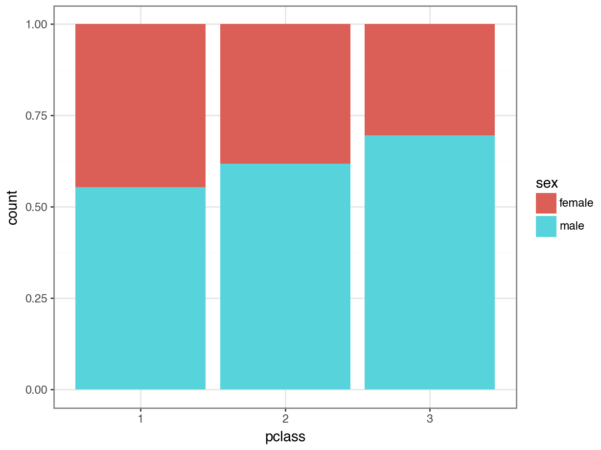
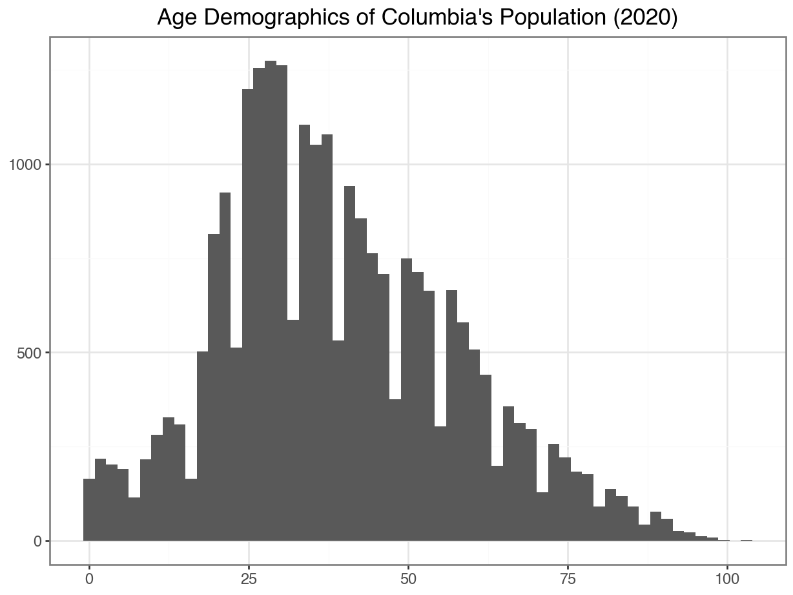
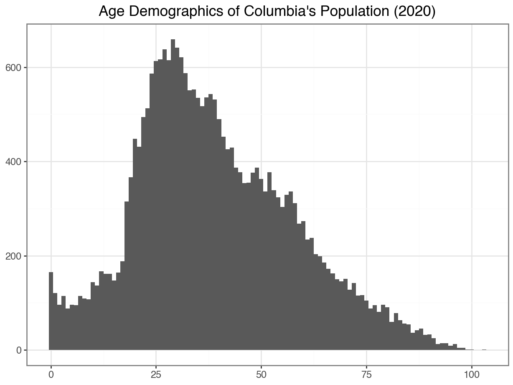
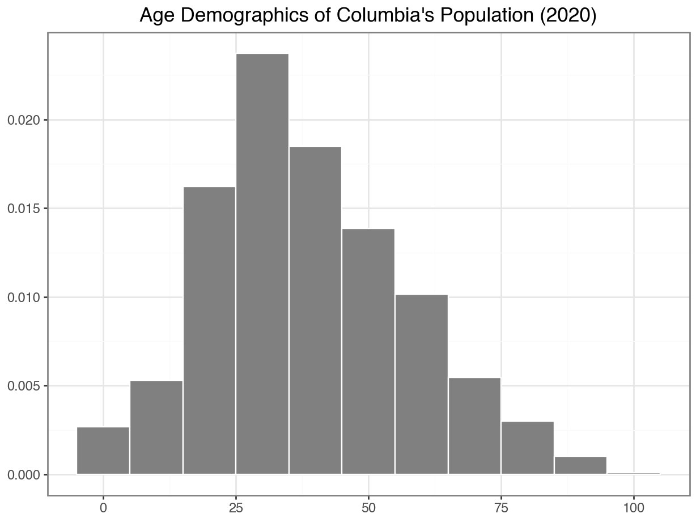
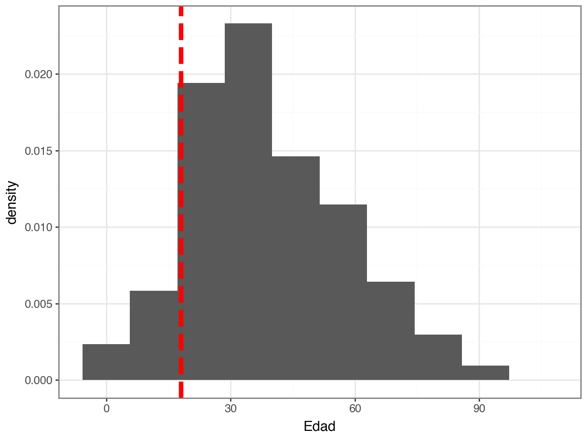

df = pd.read_csv("https://datasci112.stanford.edu/data/titanic.csv")
df["pclass"] = df["pclass"].astype("category")
df["survived"] = df["survived"].astype("category")Visualizing and Summarizing Quantitative Variables
Some Class Updates!
Changes from Week 1
Week 1 taught me that I need to make some adjustments!
Lab Attendance
Is not required. However, if you do not attend lab and come to student hours or post questions on Discord about the lab, I will be displeased.
Deadlines
- Labs are due the day after lab (like lecture quizzes / activities).
- Tuesday’s lab is due on Wednesday at 11:59pm.
- Thursday’s lab is due on Friday at 11:59pm.
- End of week assignments are due on Sundays at 11:59pm (not Saturdays).
Lab Submissions
- PDFs will be required for every Collab submission.
- Your code cannot be more than 80 characters—where the grey line appears in Collab.
- Use returns!
The story so far…
Getting, prepping, and summarizing data
Marginal Distributions
If I choose a passenger at random, what is the probability they rode in 1st class?
marginal_class = (
df['pclass']
.value_counts(normalize = True)
)
marginal_classpclass
3 0.541635
1 0.246753
2 0.211612
Name: proportion, dtype: float64Joint Distributions
If I choose a passenger at random, what is the probability they are a woman who rode in first class?
joint_class_sex = (
df[["pclass", "sex"]]
.value_counts(normalize=True)
.unstack()
)
joint_class_sexsex female male
pclass
1 0.110008 0.136746
2 0.080978 0.130634
3 0.165011 0.376623Conditional Distributions
If I choose a woman at random, what is the probability they rode in first class?
marginal_sex = (
df['sex']
.value_counts(normalize = True)
)
joint_class_sex.divide(marginal_sex)sex female male
pclass
1 0.309013 0.212337
2 0.227468 0.202847
3 0.463519 0.584816Visualizing with plotnine
(
ggplot(df, aes(x = "sex", fill = "pclass")) +
geom_bar(position = "fill") +
theme_bw()
)
Quantitative Variables
Quantitative Variables
We have analyzed a quantitative variable already. Where?
In the Colombia COVID data!
df_CO = pd.read_csv("http://dlsun.github.io/pods/data/covid/colombia_2020-05-28.csv")
df_CO Departamento Edad ... Fecha de diagnóstico Fecha recuperado
0 Bogotá D.C. 19 ... 2020-03-06 2020-03-13
1 Valle del Cauca 34 ... 2020-03-09 2020-03-19
2 Antioquia 50 ... 2020-03-09 2020-03-15
3 Antioquia 55 ... 2020-03-11 2020-03-26
4 Antioquia 25 ... 2020-03-11 2020-03-23
... ... ... ... ... ...
25361 Buenaventura D.E. 48 ... 2020-05-28 NaN
25362 Valle del Cauca 55 ... 2020-05-28 NaN
25363 Buenaventura D.E. 39 ... 2020-05-28 NaN
25364 Valle del Cauca 13 ... 2020-05-28 NaN
25365 Córdoba 0 ... 2020-05-28 NaN
[25366 rows x 10 columns]Visualizing One Quantitative Variable
Option 1: Convert it to categorical
To visualize the age variable, we did the following:
df_CO["age"] = pd.cut(
df_CO["Edad"],
bins = [0, 10, 20, 30, 40, 50, 60, 70, 80, 120],
labels = ["0-9", "10-19", "20-29", "30-39", "40-49", "50-59", "60-69", "70-79", "80+"],
right = False,
ordered = True)
Option 1: Then make a barplot
Then, we could treat age as categorical and make a barplot:
Code
(
ggplot(df_CO, aes(x = "age")) +
geom_bar() +
theme_bw()
)Option 2: Treat it as a quantitative variable!
A histogram uses equal sized bins to summarize a quantitative variable.
Code
(
ggplot(df_CO, aes(x = "Edad")) +
geom_histogram() +
labs(x = "",
y = "",
title = "Age Demographics of Columbia's Population (2020)"
) +
theme_bw()
)
Adding Style to Your Histogram
Changing Binwidth
To tweak your histogram, you can change the binwith:
(
ggplot(df_CO, aes(x = "Edad")) +
geom_histogram(binwidth = 1) +
labs(x = "",
y = "",
title = "Age Demographics of Columbia's Population (2020)"
) +
theme_bw()
)
(
ggplot(df_CO, aes(x = "Edad")) +
geom_histogram(binwidth = 10) +
labs(x = "",
y = "",
title = "Age Demographics of Columbia's Population (2020)"
) +
theme_bw()
)Adding Color & Outline
Code
(
ggplot(df_CO, aes(x = "Edad")) +
geom_histogram(binwidth = 10,
color = "white",
fill = "gray") +
labs(x = "",
y = "",
title = "Age Demographics of Columbia's Population (2020)"
) +
theme_bw()
)Using Percents Instead of Counts

Distributions
Recall the distribution of a categorical variable:
- What are the possible values and how common is each?
The distribution of a quantitative variable is similar:
- The total area in the histogram is 1.0 (or 100%).
Densities
In this example, we have a limited set of possible values for
age: 0, 1, 2, …., 100.- We call this a discrete variable.
. . .
What if had a quantitative variable with infinite values?
- For example: Price of a ticket on Titanic.
- We call this a continuous variable.
. . .
- In this case, it is not possible to list all possible values and how likely each one is.
- One person paid $2.35
- Two people paid $12.50
- One person paid $34.98
- \(\vdots\)
. . .
- Instead, we talk about ranges of values.
Densities
About what percent of people in this dataset are below 18?
Code
(
ggplot(data = df_CO, mapping = aes(x = "Edad")) +
geom_histogram(mapping = aes(y = '..density..'),
bins = 10) +
geom_vline(xintercept = 18,
color = "red",
size = 2,
linetype = "dashed") +
theme_bw()
)
. . .
How would you code it?
Summarizing One Quantitative Variable
. . .
df_CO['Edad']0 19
1 34
2 50
3 55
4 25
..
25361 48
25362 55
25363 39
25364 13
25365 0
Name: Edad, Length: 25366, dtype: int64If you had to summarize this variable with one single number, what would you pick?
Summaries of Center: Mean
Mean
One summary of the center of a quantitative variable is the mean.
When you hear “The average age is…” or the “The average income is…”, this probably refers to the mean.
Suppose we have five people, ages:
4, 84, 12, 27, 7The mean age is: \[(4 + 84 + 12 + 27 + 7) / 5 = 134 / 5 = 26.8\]
Notation Interlude
To refer to our data without having to list all the numbers, we use \(x_1, x_2, ..., x_n\)
In the previous example, \(x_1 = 4, x_2 = 84, x_3 = 12, x_4 = 27, x_5 = 7\). So, \(n = 5\).
To add up all the numbers, we use the summation notation: \[ \sum_{i = 1}^5 x_i = 134\]
Therefore, the mean is: \[\bar{x} = \frac{1}{n} \sum_{i = 1}^n x_i\]
Means in Python
Long version: find the sum and the number of observations
sum_age = df_CO["Edad"].sum()
n = len(df_CO)
sum_age / nnp.float64(39.04742568792872). . .
Short version: use the built-in .mean() function!
df_CO["Edad"].mean()np.float64(39.04742568792872)Activity 2.1
The mean is only one option for summarizing the center of a quantitative variable. It isn’t perfect!
Let’s investigate this.
Open the Activity 2.1 Collab notebook
Read in the Titanic data
Plot the density of ticket prices on titanic
Calculate the mean price
See how many people paid more than mean price
What happened
Our
faredata was skewed right: Most values were small, but a few values were very large.These large values “pull” the mean up; just how the value
84pulled the average age up in our previous example.So, why do we like the mean?
Squared Error
- Recall: Ages 4, 84, 12, 27, 7.
ages = np.array([4, 84, 12, 27, 7])- Imagine that we had to “guess” the age of the next person.
- If we guess 26.8, then our “squared error” for these five people is:
sq_error = (ages - 26.8) ** 2
(
sq_error
.round(decimals = 1)
.sum()
)np.float64(4402.6)- If we guess 20, then our “squared error” for these five people is:
sq_error = (ages - 20) ** 2
(
sq_error
.round(decimals = 1)
.sum()
)np.int64(4634)Minimizing squared error
Code
cs = range(1, 60)
sum_squared_distances = []
for c in cs:
(
sum_squared_distances
.append(
(
(df_CO["Edad"] - c) ** 2
)
.sum()
)
res_df = pd.DataFrame({"center": cs, "sq_error": sum_squared_distances})
(
ggplot(res_df, aes(x = 'center', y = 'sq_error')) +
geom_line() +
labs(x = "Mean",
y = "",
title = "Changes in Sum of Squared Error Based on Choice of Center")
)Summaries of Center: Median
Median
Another summary of center is the median, which is the “middle” of the sorted values.
To calculate the median of a quantitative variable with values \(x_1, x_2, x_3, ..., x_n\), we do the following steps:
Sort the values from smallest to largest: \[x_{(1)}, x_{(2)}, x_{(3)}, ..., x_{(n)}.\]
The “middle” value depends on whether we have an odd or an even number of observations.
If \(n\) is odd, then the middle value is \(x_{(\frac{n + 1}{2})}\).
If \(n\) is even, then there are two middle values, \(x_{(\frac{n}{2})}\) and \(x_{(\frac{n}{2} + 1)}\).
. . .
Note
It is conventional to report the mean of the two values (but you can actually pick any value between them)!
Median in Python
Ages: 4, 84, 12, 7, 27. What is the median?
Median age in the Columbia data:
df_CO["Edad"].median()np.float64(37.0)Summaries of Spread: Variance
Variance
One measure of spread is the variance.
The variance of a variable whose values are \(x_1, x_2, x_3, ..., x_n\) is calculated using the formula \[\textrm{var(X)} = \frac{\sum_{i=1}^n (x_i - \bar{x})^2}{n - 1}\]
. . .
Does this look familiar?
It’s the sum of squared error! Well, divided by \(n-1\), the “degrees of freedom”.
Variance in Python
Similar to calculating the mean, we could find the variance manually:
(
((df_CO["Edad"] - df_CO["Edad"].mean()) ** 2)
.sum() / (len(df_CO) - 1)
)np.float64(348.0870469898451). . .
…or using a built-in Python function.
df_CO["Edad"].var()np.float64(348.0870469898451)Standard Deviation
Notice that the variance isn’t very intuitive. What do we mean by “The spread is 348”?
This is because it is the squared error!
. . .
- To get it in more interpretable language, we can take the square root:
np.sqrt(df_CO["Edad"].var())np.float64(18.65709106452142). . .
Or, we use the built-in function!
df_CO["Edad"].std()np.float64(18.65709106452142)Takeaways
Takeaway Messages
Visualize quantitative variables with histograms or densities.
Summarize the center of a quantitative variable with mean or median.
Describe the shape of a quantitative variable with skew.
Summarize the spread of a quantitative variable with the variance or the standard deviation.